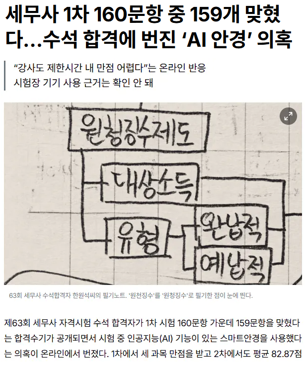

기사에서 수석합격자 터는 법 공개함 ㅋㅋ
1. 한원석씨 ai계정 당시 채팅내역 조사
2. 한원석씨 2차시험 단어 단위로 재채점하면 '원청징수'같은거 다 감점시켜서 떨어뜨릴 수도 있을듯
기사 링크 https://www.tudi.co.kr/news/articleView.html?idxno=503

기사에서 수석합격자 터는 법 공개함 ㅋㅋ
1. 한원석씨 ai계정 당시 채팅내역 조사
2. 한원석씨 2차시험 단어 단위로 재채점하면 '원청징수'같은거 다 감점시켜서 떨어뜨릴 수도 있을듯
기사 링크 https://www.tudi.co.kr/news/articleView.html?idxno=503
사람들 얘기하는거 보니까 현직이거나 공부해본 사람들은 중립이 필요도 없다고 하더라
갑자기 무명의 선수가 100미터 8초를 찍은 상황이라던데 ㅋㅋㅋ
나 10년쯤 전에 합격한 사람인데(52기임), 80문제를 80분 안에 풀어야 되는거라 답지 마킹시간까지 생각하면 1문제당 40초 내로 끊어야함. (80문 80분 두 번 함) 존나 계산문제를??? 그래서 보통 재정학이나 상법에서 빨리 풀고, 오래 걸릴 문제는 버려서 시간 확보하는데 이거 분별 잘해야 아슬아슬하게 모든 문제 읽을수라도 있음.
애초에 다 풀라고 나온 문제도 아니라서 다 풀지도 않음. 문제를 다 읽는것조차 빡셈.
나 시험볼때보다 지금이 훨씬 더 어려워졌을텐데 모든 문제 완벽하게 맞춘다는게 물리적으로 불가능... 이라고 생각하는데 세상은 넓으니 가능한 사람이 있다치면 존나 천재여야함.
여기까진 그럴수 있다 치는데 2차는 훨씬 어려워서 생동차로 저 점수 나온게 엄청난거긴 해. 나도 생동차로 합격한 경우라 주위에서 공부에 미친놈 소리 들었었는데 이런 케이스 처음봐서 궁금하긴 하다. 진짜 세기의 천재인지.
그런 천재가 세무사를요?ㅋㅋㅋ
글게요? 세기의 천재이신 것 같은데 세무사 업계가 품기엔 너무 아까운 인재같네요. 변호사 의사 회계사 변리사 등등 전문직 콜렉터 하셔야 할 듯.
나도 지금 후기 찾아보고 의아한게... 주변이 전문직시험 한 번씩들 준비했었고, 대학동 고시촌 오래 살았다보니 나도 줏어듣는게 있단말야...
어떤 시험이든 보통 공통적으로 들리는 이야기로는 [A to Z 다 알려고 하면 오히려 수험생활 길어진다. 선택과 집중을 해서 버릴거 어느정도 버리고 가야한다, 버릴 단원은 버려라]는 이야기를 많이 들었단말이지?
근데 저 사람 후기 보면 엥? 단원을 버리지 말래. 단원을 안 버리고 그걸 통으로 다 공부하면서 1차 2차 동시 공부하는게 가능하다고? 그럼 진짜 천잰데?
띠용...? 나도 생동차니까 아는데 절대적인 시간이 부족함. 무조건 버려야 돼. 나는 분할, 합병을 버렸는데, 이거 나오면 걍 1년 더 공부하라는 계시니까 내 잘못이다 하고 대신에 다른거 줜나 봤는데도 압도적으로 부족했음.
버리지 않은 부분에서도 뭐 버리고 뭐는 가져가고 세분해서 선별해가지고 공부했음. 하루 6시간 자고 순공 11~12시간 유지했는데도 이랬음.
왜냐하면 전문직 시험은 애매하게 알면 안되고 토씨 하나 안틀리고 법조문과 판례와 풀이과정이 줄줄줄 나올 정도로 완벽하게 알아야 하기 때문임.
이렇게 공부하고도 2차 53.5로 합격함. 발표 날때까지 '이거 둘 중 하나다. 떨어지든지, 문닫고 들어가겠구나' 했는데. 뭐, 이건 내가 부족한 걸수도 있으니까.
하튼 해본 입장에서는 물리적으로 저 점수가 불가능함. 애초에 다 맞추라고 내는 문제가 아니니까.
아님 진짜로 서번트 증후군이나 과다기억증후군(맞나?) 처럼 압도적인 기억력을 가지고 + 수재여야(외우는 거랑 문제 푸는 건 다르니까) 가능...
버려야 한다는게, 공부를 소홀히 한다가 아니고 전문직 시험은 원래 그런건데...
결론은 천재이신 것 같으니 세무사 말고 다른 전문직도 하시는게 어떤가.
요즘은 시험난이도 높아져서 단원버리면 시험버리는거임
내가 시험본게 10년전이라 다를거라 생각은 하는데 생동차가 모든 단원 가져가는게 가능해? 생동차면 무조건 버려야할텐데. 통째로 버리진 않더라도 부분부분 버려야되지 않아?
나는 변호사인데 사시때 버리던 단원들도 지금은 챙겨가야함 ㅜ
개빢세네... 그럼 현실적으로 생동차가 무리거나, 진짜진짜 운이 좋아서 가져간 단원에서만 문제가 다 나오는 억빠가 있어야 된단 거네? 생동차가 훨씬 어려워진거 아닌가? 그 생동차가 저 점수를?
아무리 생각해도 물리적으로 불가능 vs 불세출의 천재다...
역대 최고 점수라는데
노베이스로 시험준비 2년깔짝인 사람이 해냈다는거 자체가 의혹덩어리인거지
다른 시험들이 문제가 될듯. 시험들 중에 실력보다는 그냥 진입장벽 역할하는 목적이 강한 시험들이 문제될듯.
ㄹㅇ입시시험이나 공무원시험류 같은게 진짜 비상일듯
공부방법 전자책 팔고, 공부 인플루언서 하면 돈 끌어모으기 쌉가능
그때그때 ai 써서 실무 거치고 짬 쌓이면 그럴저럭 버티겠다 싶나봐
업무는 AI활용하면됨..
진입만 넘어가면 밑에 애 잘뽑으면 돌아감.......영업만 해도댐...
ㄹㅇ 전기기사 자격증 따고 기업마다 그냥 자격증 걸어놓고 그걸로 돈버는 사람 있는데 전기쪽 물어보면 알고 있는거 없음. 옛날에 배운거라 기억 안난다함. 근데 전기 전문가임ㅋㅋㅋㅋㅋ 전기공학과 학부생이 더 잘알듯
세무사 자격증 따거나 1차 시험 패스만 해도 취업에 큰 스펙이됨
가서 일 못하는거야 공부머린 있어도 일머린 없다는 식으로 포장 가능하고 실무에선 ai안쓰는 곳 없으니 많이 티 안날듯
ㄹㅇ임 결국 대처능력임..
안경썼네 그냥 재시험이 아니라 적당한 시험 하나만 해보고 판결 내리면 됨 왜안됨? 부정행위 걸리면 소급해서 불합이지
이제 시험볼때 뿔태는 절대 못끼게 하겠네
1차에서 1문제 틀렸다던데 그게 가능한가....? 난 세무사시험은 쳐보진 않았지만 적어도 그게 물리적으로 불가능한 수준이라는 것 정도는 아는데
근데 왜 다들 저사람이 썼다고 정해놓고 패는 느낌이 나지… 진짜 똑똑한 사람이어도 불가능한게 확실한거야? ㄹㅇ 몰라서 그럼
걍 봤을땐 증거도없이 사람 묻으려는느낌인데
ㄹㅇ 설명좀..
저 위에 10년차 세무사 합격한 사람 댓글 읽어보셈. 그게 가장 잘 설명한 듯
물리적으로 불가능한 무언가 vs 불세출의 천재
저거 합격자 필기노트인데 원청징수라고 써져있잖아?
수능 만점자 필기노트에 sin30 cos45 이딴게 적혀있는것도 기가 막히는데 사인 코사인을 못읽어서 신 코스 이렇게 필기해놓은거임
얘가 어케 만점을 받아
지텔프 20트한 사람이 갑자기 역사에 남을만한 천재가 되었다?
판타지웹소설 설정으로도 과함
애초에 100점 맞는 게 불가능한 시험을 만들어둔 것인데 100점 맞은 것임
수험생 현직자 그리고 과거 수석 중에서도 이해 안된다는 사람들 나오는 중
유일한 가능성이
역대급 천재가 등장했을 경우인데
이 사람 언행 보면
그렇게 보이지는 않아서 그런 것임
나도 세무사 준비했었는데
저 사람 책은 깨끗한데 서로 관계없는 부분 펴놓은 거 찍어서 올려뒀더라고
99.999% ai안경 썼다고 보는중
틀리면 무릎 꿇을 생각임
이거 보고 느낀게 세무는 ai 맡겨도 된단거임
세무사 일감 많이 없어지고있긴하지
ai가 판례시험에서 조진 거 보면 오히려 법 적용에서는 ai가 못 이긴다의 반증 아님?
뭘 좆되 ㅋㅋㅋㅋㅋㅋ 너 나와서 세무업무나 하다못해 기장만 써봐도 이건 대체 불가 라는 느낌 빡온다 불법을 어떻게 가라쳐서 합법을 만들건데 ai는 그거 잘 못해 여러번 물어봐야되고
생각해보니 반대로 이게 거의 완벽하게 합격했다는 건 몇년 후에는 굳이 세무사가 그닥 필요 없다는 거 아닌가?
문제 공개 한 다음 차수석들이 모인 곳에서 공개 해설 강의 영상 찍은 다음(사람 들이 지켜보면 영상 찍기 힘들 수 있으니까 매직 미러 방에 가둬두고), 그다음 50점대 나온 시험도 마찬가지로 강의하면서, 분명 주관식 문제에서 풀 수 있는 부분이 객관식 문제의 어떤 문제에 포함됬는데 왜 객관식은 풀고 주관식은 못 풀었냐로 질의 응답하면 이 사람의 실제 실력이 밝혀지겠지라고 생각함. 별개로 정황상 ai를 썼든 어떻든 이 사람이 부정 행위룰 하여 초고득점을 받았을거라 의심이 농후하게 듬.


문제 유형별 하네스 짜서 갔나보네 굳
원청을 징수 할수도 있잖아요!!
징수의 총 메타 ㄷㄷ
시발 ㅋㅋㅋㅋ 가린이요?는